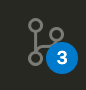
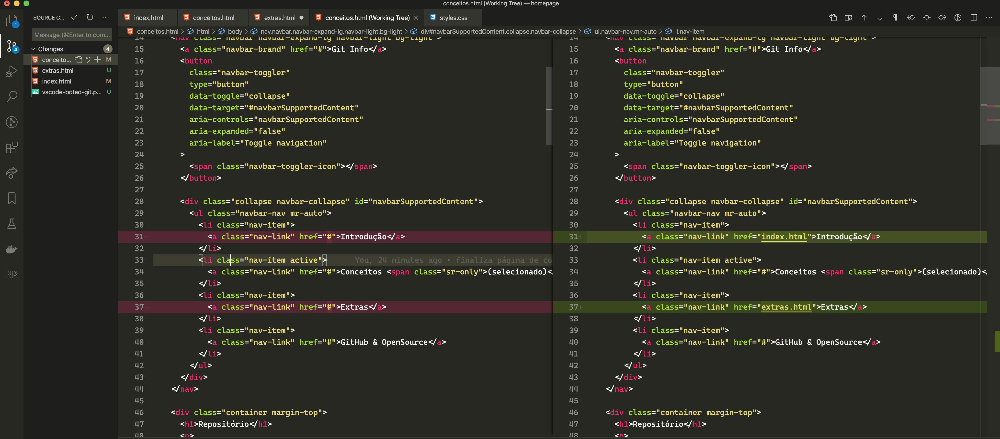
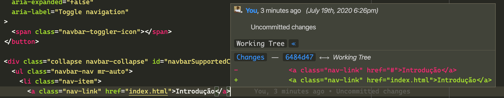
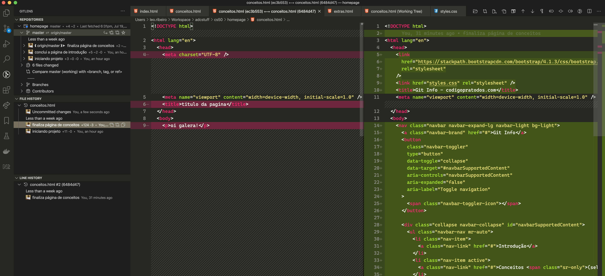

| Comando | Descrição |
|---|---|
git init <directory> |
Cria repositório vazio. |
git clone <repo> |
Clona (copia) um repositório. |
git add <directory> |
Adiciona arquivos para serem adicionados no commit. |
git commit -m "<message>" |
Persiste as alterações no repositório de versão (local, até um push ser feito). |
git status |
Lista o status atual de arquivos, alterações etc. |
git log |
Exibe um histórico de commits. |
git diff |
Exibe um comparativo de arquivos que estão/foram modificados/removidos/adicionados. |
git branch |
Lista todas as branchs. |
git checkout -b <branch> |
Cria uma nova branch com o nome desejado. |
git merge <branch> |
Faz o merge da branch selecionada para a branch que você está. |
git remote add <name> <url> |
Adiciona um novo repositório remoto, para que você possa fazer pulls e pushs. |
git pull |
Pega as alterações que estão no repositório remoto. |
git push |
Envia as alterações commitadas para o repositório remoto. |
git config --global user.name <name> |
Define o seu nome de usuário (obrigatório para referenciar seu usuário no Github). |
git config --global user.email <email> |
Define o seu email de usuário (obrigatório para referenciar seu usuário no Github). |
Mais comandos: Cheatsheet criado pela Atlassian Bitbucket
Apesar do git te dar uma gama de comandos suficientes para manusear o repositório, você pode se beneficiar de ótimas ferramentas gráficas para entender o seu código e histórico de alterações.
No VSCode você vai encontrar a aba "Source Control" no botão:
E ao clicar no botão, você pode clicar nos arquivos para verificar as alterações atuais, commitar e fazer o push! Tudo de maneira prática, simples e rápida!
O GitLens é um Plugin do VSCode bem útil que facilita a visualização de alterações ou responsáveis por alterações nos seus arquivos. Exemplo:
E não só isso, o GitLens oferece um painel interativo onde você pode ver os mínimos detalhes de histórico de alteração de qualquer coisa do repositório ou arquivos específicos, comparar histórico e muitas operações complexas! (Muito útil para trabalho em equipe!)
Você pode fazer o download do GitLens Aqui na página do Marketplace do VSCode.